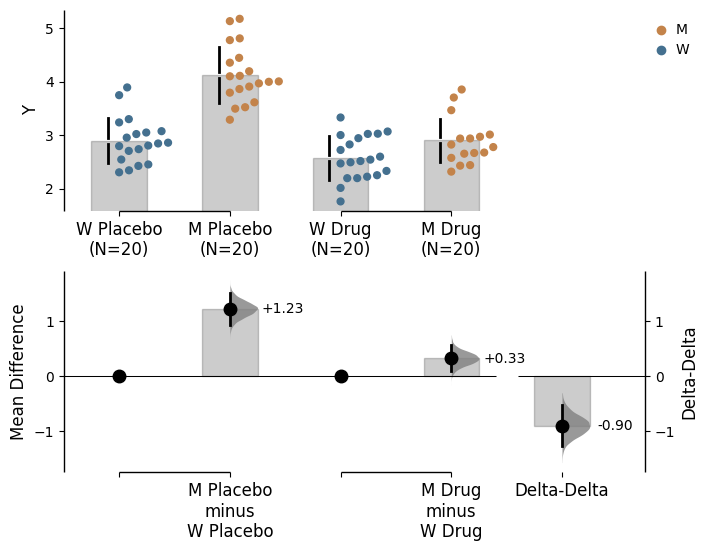
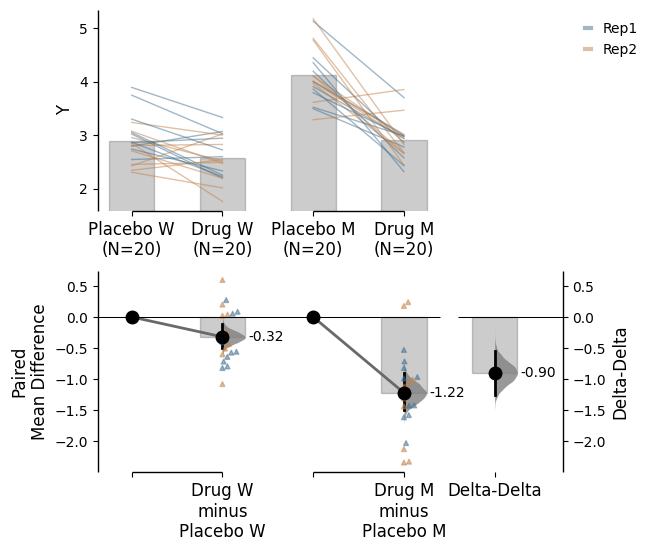
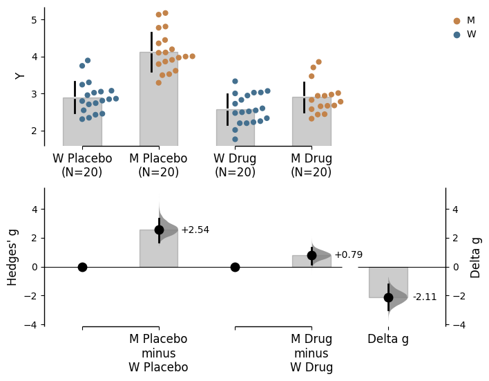
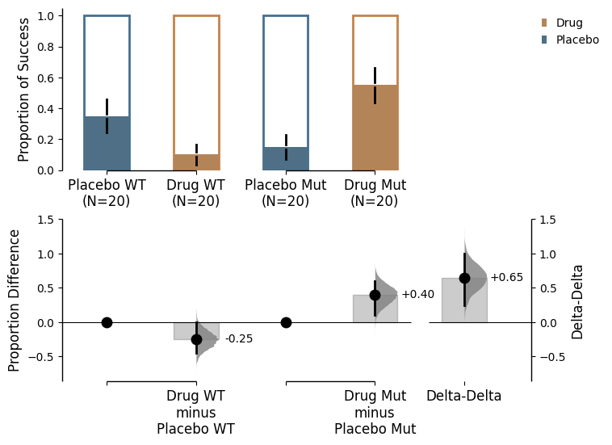

Explanation of how to calculate delta-delta using DABEST.
Since v2023.02.14, DABEST also supports the calculation of delta-delta, an experimental function that facilitates the comparison between two bootstrapped effect sizes computed from two independent categorical variables.
Since v2025.03.27, DABEST also supports the calculation of delta-delta for binary data (proportion plots).
Many experimental designs investigate the effects of two interacting independent variables on a dependent variable. The delta-delta effect size enables us distill the net effect of the two variables. To illustrate this, let’s explore the following problem.
Consider an experiment where we test the efficacy of a drug named Drug on a disease-causing mutation M based on disease metric Y. The greater the value Y has, the more severe the disease phenotype is. Phenotype Y has been shown to be caused by a gain-of-function mutation M, so we expect a difference between wild type (W) subjects and mutant subjects (M). Now, we want to know whether this effect is ameliorated by the administration of Drug treatment. We also administer a placebo as a control. In theory, we only expect Drug to have an effect on the M group, although in practice, many drugs have non-specific effects on healthy populations too.
Effectively, we have four groups of subjects for comparison.
Wildtype
Mutant
Drug
XD, W
XD, M
Placebo
XP, W
XP, M
There are two Treatment conditions, Placebo (control group) and Drug (test group). There are two Genotype: W (wild type population) and M (mutant population). Additionally, each experiment was conducted twice (Rep1 and Rep2). We will perform several analyses to visualise these differences in a simulated dataset.
Load libraries
import numpy as npimport pandas as pdimport dabestprint("We're using DABEST v{}".format(dabest.__version__))
Numba compilation complete!
We're using DABEST v2025.03.27
Creating a demo dataset
from scipy.stats import norm # Used in generation of populations.np.random.seed(9999) # Fix the seed to ensure reproducibility of results.# Create samplesN =20y = norm.rvs(loc=3, scale=0.4, size=N*4)y[N:2*N] = y[N:2*N]+1y[2*N:3*N] = y[2*N:3*N]-0.5# Add a `Treatment` columnt1 = np.repeat('Placebo', N*2).tolist()t2 = np.repeat('Drug', N*2).tolist()treatment = t1 + t2 # Add a `Rep` column as the first variable for the 2 replicates of experiments donerep = []for i inrange(N*2): rep.append('Rep1') rep.append('Rep2')# Add a `Genotype` column as the second variablewt = np.repeat('W', N).tolist()mt = np.repeat('M', N).tolist()wt2 = np.repeat('W', N).tolist()mt2 = np.repeat('M', N).tolist()genotype = wt + mt + wt2 + mt2# Add an `id` column for paired data plotting.id=list(range(0, N*2))id_col =id+id# Combine all columns into a DataFrame.df_delta2 = pd.DataFrame({'ID' : id_col,'Rep' : rep,'Genotype' : genotype, 'Treatment': treatment,'Y' : y })df_delta2.head(5)
ID
Rep
Genotype
Treatment
Y
0
0
Rep1
W
Placebo
2.793984
1
1
Rep2
W
Placebo
3.236759
2
2
Rep1
W
Placebo
3.019149
3
3
Rep2
W
Placebo
2.804638
4
4
Rep1
W
Placebo
2.858019
Loading data
To create a delta-delta plot, you simply need to set delta2=True in the dabest.load() method. However, in this case,x needs to be declared as a list consisting of 2 elements, unlike most cases where it is a single element. The first element in x will represent the variable plotted along the horizontal axis, and the second one will determine the color of dots for scattered plots or the color of lines for slope graphs. We use the experiment input to specify the grouping of the data.
unpaired_delta2 = dabest.load(data = df_delta2, x = ["Genotype", "Genotype"], y ="Y", delta2 =True, experiment ="Treatment")unpaired_delta2
DABEST v2025.03.27
==================
Good afternoon!
The current time is Tue Mar 25 16:03:11 2025.
Effect size(s) with 95% confidence intervals will be computed for:
1. M Placebo minus W Placebo
2. M Drug minus W Drug
3. Drug minus Placebo (only for mean difference)
5000 resamples will be used to generate the effect size bootstraps.
unpaired_delta2.mean_diff
DABEST v2025.03.27
==================
Good afternoon!
The current time is Tue Mar 25 16:03:12 2025.
The unpaired mean difference between W Placebo and M Placebo is 1.23 [95%CI 0.937, 1.51].
The p-value of the two-sided permutation t-test is 0.0, calculated for legacy purposes only.
The unpaired mean difference between W Drug and M Drug is 0.326 [95%CI 0.0956, 0.574].
The p-value of the two-sided permutation t-test is 0.0122, calculated for legacy purposes only.
The delta-delta between Placebo and Drug is -0.903 [95%CI -1.27, -0.522].
The p-value of the two-sided permutation t-test is 0.0, calculated for legacy purposes only.
5000 bootstrap samples were taken; the confidence interval is bias-corrected and accelerated.
Any p-value reported is the probability of observing the effect size (or greater),
assuming the null hypothesis of zero difference is true.
For each p-value, 5000 reshuffles of the control and test labels were performed.
To get the results of all valid statistical tests, use `.mean_diff.statistical_tests`
Generating delta-delta plots
unpaired_delta2.mean_diff.plot();

In the above plot, the horizontal axis represents the Genotype condition and the dot colour is also specified by Genotype. The left pair of scattered plots is based on the Placebo group while the right pair is based on the Drug group. The bottom left axis contains the two primary deltas: the Placebo delta and the Drug delta. We can easily see that when only the placebo was administered, the mutant phenotype is around 1.23 [95%CI 0.948, 1.52]. This difference was shrunken to around 0.326 [95%CI 0.0934, 0.584] when the drug was administered. This gives us some indication that the drug is effective in amiliorating the disease phenotype. Since the Drug did not completely eliminate the mutant phenotype, we have to calculate how much net effect the drug had. This is where delta-delta comes in. We use the Placebo delta as a reference for how much the mutant phenotype is supposed to be, and we subtract the Drug delta from it. The bootstrapped mean differences (delta-delta) between the Placebo and Drug group are plotted at the right bottom with a separate y-axis from other bootstrap plots. This effect size, at about -0.903 [95%CI -1.28, -0.513], is the net effect size of the drug treatment. That is to say that treatment with drug A reduced disease phenotype by 0.903.
The mean difference between mutants and wild types given the placebo treatment is:
where \(\overline{X}\) is the sample mean, \(\Delta\) is the mean difference.
The configuration of comparison we performed above is reminiscent of a two-way ANOVA. In fact, the delta - delta is an effect size estimated for the interaction term between Treatment and Genotype. Main effects of Treatment and Genotype, on the other hand, can be determined by simpler, univariate contrast plots.
Specifying grouping for comparisons
In the example above, we used the convention of test - control but you can manipulate the orders of the experiment groups as well as the horizontal axis variable by setting the paremeters experiment_label and x1_level.
Utilising the show_delta2 argument within the .plot() method allows for control of whether the delta-delta effect size is displayed on the plot. By default, this is set to True.
The delta-delta function also supports paired data, providing a useful alternative visualization of the data. Assuming that the placebo and drug treatment were administered to the same subjects, our data is paired between the treatment conditions. We can specify this by using Treatment as x and Genotype as experiment, and we further specify that id_col is ID, linking data from the same subject with each other. Since we have conducted two replicates of the experiments, we can also colour the slope lines according to Rep.
paired_delta2 = dabest.load(data = df_delta2, paired ="baseline", id_col="ID", x = ["Treatment", "Rep"], y ="Y", delta2 =True, experiment ="Genotype")paired_delta2.mean_diff.plot();

We see that the drug had a non-specific effect of -0.321 [95%CI -0.498, -0.131] on wild type subjects even when they were not sick, and it had a bigger effect of -1.22 [95%CI -1.52, -0.906] in mutant subjects. In this visualisation, we can see the delta-delta value of -0.903 [95%CI -1.21, -0.587] as the net effect of the drug accounting for non-specific actions in healthy individuals.
The mean difference between drug and placebo treatments in wild type subjects is:
where \(\overline{X}\) is the sample mean, \(\Delta\) is the mean difference.
Standardising delta-delta effect sizes with Delta g
Standardized mean difference statistics like Cohen’s d and Hedges’ g quantify effect sizes in terms of the sample variance. We have introduced a metric, Delta g, to standardize delta-delta effects. This metric enables the comparison between measurements of different dimensions.
The standard deviation of the delta-delta value is calculated from a pooled variance of the 4 samples:
This metric can be accessed via the ‘hedges_g’ effect size when utilising delta2=True in dabest.load().
unpaired_delta2.hedges_g
DABEST v2025.03.27
==================
Good afternoon!
The current time is Tue Mar 25 16:03:15 2025.
The unpaired Hedges' g between W Placebo and M Placebo is 2.54 [95%CI 1.71, 3.31].
The p-value of the two-sided permutation t-test is 0.0, calculated for legacy purposes only.
The unpaired Hedges' g between W Drug and M Drug is 0.793 [95%CI 0.17, 1.33].
The p-value of the two-sided permutation t-test is 0.0122, calculated for legacy purposes only.
The delta g between Placebo and Drug is -2.11 [95%CI -2.97, -1.22].
The p-value of the two-sided permutation t-test is 0.0, calculated for legacy purposes only.
5000 bootstrap samples were taken; the confidence interval is bias-corrected and accelerated.
Any p-value reported is the probability of observing the effect size (or greater),
assuming the null hypothesis of zero difference is true.
For each p-value, 5000 reshuffles of the control and test labels were performed.
To get the results of all valid statistical tests, use `.hedges_g.statistical_tests`
We see the standardised delta-delta (delta g) value of -2.11 standard deviations [95%CI -2.98, -1.2] as the net effect of the drug accounting for non-specific actions in healthy individuals.
unpaired_delta2.hedges_g.plot();

Delta-delta for binary data
Since v2025.03.27, the delta-delta function also supports binary data (proportion plots). In this case, the delta-delta value is calculated as the difference between the two proportions. This can be used for both unpaired and paired binary data.
def create_demo_dataset_delta(seed=9999, N=20):import numpy as npimport pandas as pdfrom scipy.stats import norm # Used in generation of populations. np.random.seed(seed) # Fix the seed so the results are replicable.# pop_size = 10000 # Size of each population.from scipy.stats import norm # Used in generation of populations.# Create samples y = norm.rvs(loc=3, scale=0.4, size=N*4) y[N:2*N] = y[N:2*N]+1 y[2*N:3*N] = y[2*N:3*N]-0.5 ind = np.random.binomial(1, 0.5, size=N*4) ind[N:2*N] = np.random.binomial(1, 0.2, size=N) ind[2*N:3*N] = np.random.binomial(1, 0.1, size=N)# Add drug column t1 = np.repeat('Placebo', N*2).tolist() t2 = np.repeat('Drug', N*2).tolist() treatment = t1 + t2 # Add a `rep` column as the first variable for the 2 replicates of experiments done rep = []for i inrange(N*2): rep.append('Rep1') rep.append('Rep2')# Add a `genotype` column as the second variable wt = np.repeat('WT', N).tolist() mt = np.repeat('Mut', N).tolist() wt2 = np.repeat('WT', N).tolist() mt2 = np.repeat('Mut', N).tolist() genotype = wt + mt + wt2 + mt2# Add an `id` column for paired data plotting.id=list(range(0, N*2)) id_col =id+id# Combine all columns into a DataFrame. df_prop = pd.DataFrame({'ID' : id_col,'Rep' : rep,'Genotype' : genotype, 'Treatment' : treatment,'Y' : y,'Cat' :ind })return df_propdf_prop = create_demo_dataset_delta()unpaired_prop = dabest.load(data = df_prop, proportional=True,# id_col="index", paired='baseline', x = ["Treatment", "Treatment"], y ="Cat", delta2=True, experiment="Genotype",)unpaired_prop.mean_diff.plot();

Statistics
You can find all outputs of the delta-delta calculation by assessing the attribute named delta_delta of the effect size object.
unpaired_delta2.mean_diff.delta_delta
DABEST v2025.03.27
==================
Good afternoon!
The current time is Tue Mar 25 16:03:16 2025.
The delta-delta between Placebo and Drug is -0.903 [95%CI -1.27, -0.522].
The p-value of the two-sided permutation t-test is 0.0, calculated for legacy purposes only.
5000 bootstrap samples were taken; the confidence interval is bias-corrected and accelerated.
Any p-value reported is the probability of observing the effect size (or greater),
assuming the null hypothesis of zero difference is true.
For each p-value, 5000 reshuffles of the control and test labels were performed.
The delta_delta object has its own attributes, containing various information of delta-delta.
difference: the mean bootstrapped differences between the 2 groups of bootstrapped mean differences
bootstraps: the 2 groups of bootstrapped mean differences
bootstraps_delta_delta: the bootstrapped differences between the 2 groups of bootstrapped mean differences
permutations: the mean difference between the two groups of bootstrapped mean differences calculated based on the permutation data
permutations_var: the pooled group variances of two groups of bootstrapped mean differences calculated based on permutation data
permutations_delta_delta: the delta-delta calculated based on the permutation data
A dataframe of this delta delta dabest object can also be called via the delta_delta.results attribute.
unpaired_delta2.mean_diff.delta_delta.results
control
test
difference
ci
bca_low
bca_high
bca_interval_idx
pct_low
pct_high
pct_interval_idx
bootstraps_control
bootstraps_test
bootstraps_delta_delta
permutations_control
permutations_test
permutations_delta_delta
pvalue_permutation
permutation_count
bias_correction
jackknives
0
Placebo
Drug
-0.903179
95
-1.271483
-0.521935
(124, 4874)
-1.270426
-0.519652
(125, 4875)
[1.0890043559982234, 1.1472720447282119, 1.072...
[0.6003430615628478, 0.6547912656551773, 0.294...
[-0.43421309034304567, -0.7324573148122022, -1...
[-0.15899787281865496, 0.23958268043726694, 0....
[-0.036113268018566735, -0.05491466432013192, ...
[0.12288460480008823, -0.29449734475739886, -0...
0.0
5000
-0.000501
[-0.9006797310317582, -0.9006200702547091, -0....
Similarly, for the standardised delta-delta effect size, the hedges_g object has its own delta delta (Delta g) results attribute.
unpaired_delta2.hedges_g.delta_delta.results
control
test
difference
ci
bca_low
bca_high
bca_interval_idx
pct_low
pct_high
pct_interval_idx
bootstraps_control
bootstraps_test
bootstraps_delta_delta
permutations_control
permutations_test
permutations_delta_delta
pvalue_permutation
permutation_count
bias_correction
jackknives
0
Placebo
Drug
-2.106681
95
-2.965759
-1.217424
(124, 4874)
-2.963294
-1.212099
(125, 4875)
[2.3610871907095192, 2.7764672664031567, 2.350...
[1.549355181508767, 1.7247260954921417, 0.6471...
[-1.0128104949604284, -1.708470960574333, -2.7...
[-0.1986457235842243, 0.3014021841951519, 0.31...
[-0.08117530110708499, -0.12358349103957916, -...
[0.11747042247713932, -0.4249856752347311, -0....
0.0
5000
-0.000501
[-2.1008530246437576, -2.10071386471865, -2.10...
For further aesthetic changes, the Plot Aesthetics Tutorial provides detailed examples of how to customize the plot.